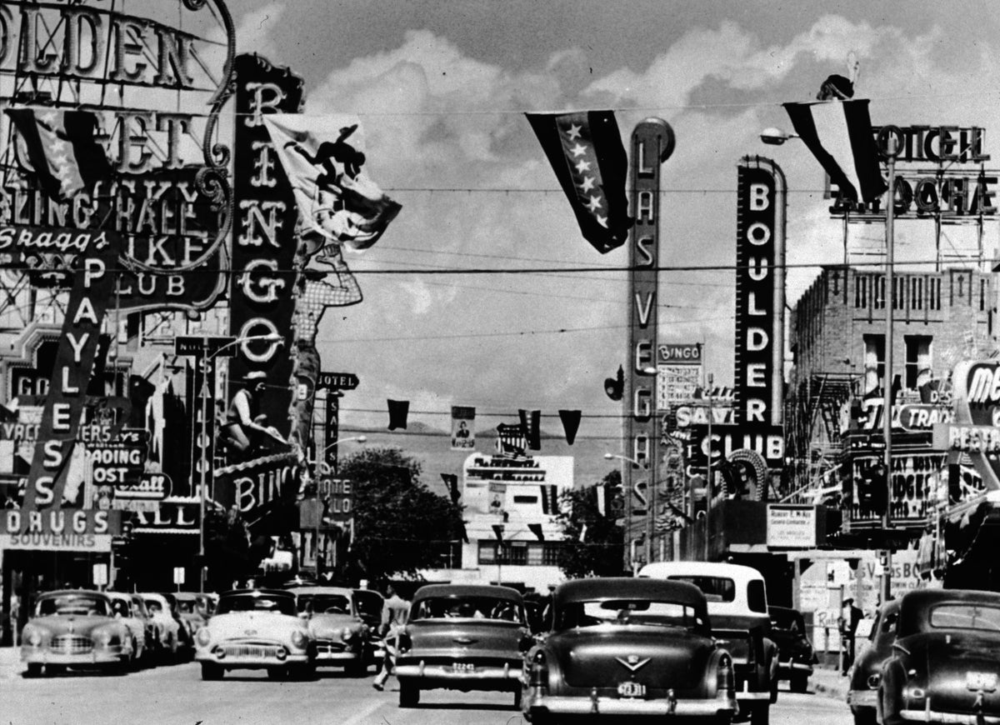
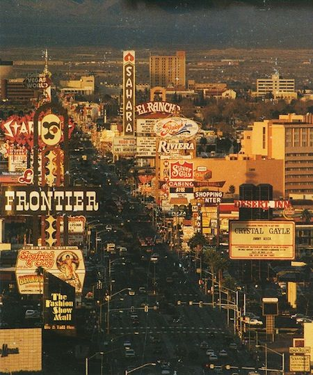
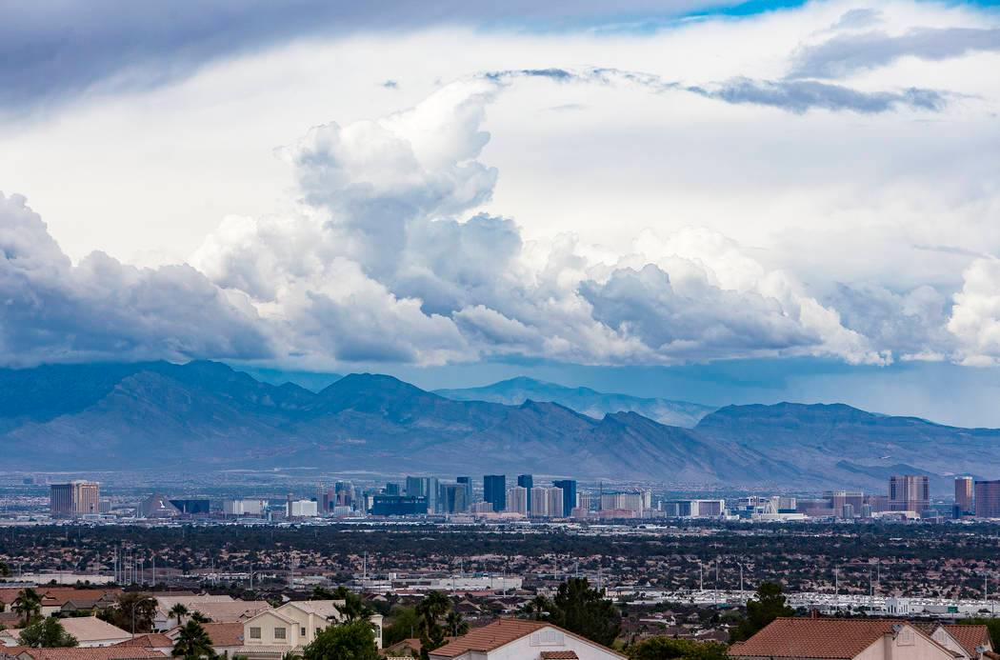

The settlement of Las Vegas, Nevada was founded in 1905 after the opening of a railroad that linked Los Angeles and Salt Lake City. The stopover attracted some farmers (mostly from Utah) to the area, and fresh water was piped in to the settlement. In 1911, the town was incorporated as part of the newly founded Clark County. Urbanization took off in 1931 when work started on the Boulder Dam (now the Hoover Dam), bringing a huge influx of young male workers, for whom theaters and casinos were built, largely by the Mafia. Electricity from the dam also enabled the building of many new hotels along the Strip. The arrival of Howard Hughes in 1966 did much to offset mob influence and helped turn Las Vegas into more of a family tourist center, now classified as a Mega resort
Prehistory
The prehistoric landscape of the Las Vegas Valley and most of Southern Nevada was once a marsh with water and vegetation. The rivers that created the marsh eventually went underground, and the marsh receded. The valley then evolved into a parched, arid landscape that only supported the hardiest animals and plants.
At some point in the valley's early geologic history, the water resurfaced and flowed into what is now the Colorado River. This created a luxurious plant life, forming a wetland oasis in the Mojave Desert landscape.
Evidence of prehistoric life in Las Vegas Valley has been found at the Tule Springs Fossil Beds National Monument. An abundance of Late Pleistocene fossils have been discovered from this locality, including Columbian mammoths and Camelops hesternus.
Native American (Paiute) history
Native Americans lived in the Las Vegas Valley, beginning over 10,000 years ago. Archaeologists have discovered baskets, petroglyphs, pictographs and other evidence in diverse locations, including Gypsum Cave and Tule Springs. Paiutes moved into the area as early as AD 700, migrating between nearby mountains in the summer and spending winter in the valley, near Bing Springs
the beginning of modern Las Vegas
Much like in other American settled counties and towns throughout the United States, entertainment venues were segregated between black- and white-owned businesses. With almost all of the businesses owned and operated by whites, Black Americans were barred from entering the venues, which remained focused, regardless of their legitimacy or criminality, on entertaining a white-only clientele. As a result of property deeds, businesses owned by or mainly serving non-whites were confined to clubs on the "west side" of the tracks. This also was enforced in many of the work positions. Thus, African Americans (except those who provided the labor for low-paying menial positions or entertainment) and Hispanics were limited in employment occupations at the white-owned clubs. However, because of employment deals with black worker groups, many clubs favored black workers, and the Hispanic population actually decreased 90% from 2,275 to just 236 by the mid-1950s.
Explosive growth
On a percentage basis, Las Vegas and Clark County experienced incredibly high growth rates starting in the 1930s and lasting until the late 2000s recession. During that period, the population of the city more than doubled in most decades. The rate slowed down in the 1970s with the decrease of the white birth rate, but never dropped below 60% (1980–1990), and even accelerated after 1990 due to immigration. By 2000, Las Vegas was the largest city founded in the 20th century,[29] and by 2006 it was the 28th largest city in the U.S., with a population of 552,000 in the city and nearly 1.8 million in Clark County. The explosive growth resulted in rapid development of commercial and residential areas throughout the Las Vegas Valley. The strong boom in the resort business led to many new condominium developments all along the Strip and downtown area.

Urbanization took off in 1931 when work started on the Boulder Dam (now the Hoover Dam), bringing a huge influx of young male workers, for whom theaters and casinos were built...
The arrival of Howard Hughes in 1966 did much to offset mob influence and helped turn Las Vegas into more of a family tourist center, now classified as a Mega resort

Paiutes moved into the area as early as AD 700, migrating between nearby mountains in the summer and spending winter in the valley, near Bing Springs

Much like in other American settled counties and towns throughout the United States, entertainment venues were segregated between black- and white-owned businesses.
On a percentage basis, Las Vegas and Clark County experienced incredibly high growth rates starting in the 1930s and lasting until the late 2000s recession